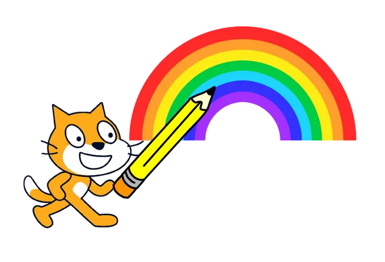

O que vou aprender?
Com o Scratch você pode aprender a criar Jogos, estórias e animações!
Jogos: Crie seu jogo
Estórias: Imagine e crie sua estória.
TRANSFORME O SEU MUNDO SE DIVERTINDO COM A GENTE
Venha aprender com Scratch
Scratch é uma plataforma online que oferece uma experiência de aprendizado de programação divertida e fácil de entender. Com Scratch, as crianças podem criar seus próprios jogos e aplicativos usando uma linguagem de programação simples e intuitiva. Com Scratch, as crianças podem criar seus próprios jogos e aplicativos usando uma linguagem de programação simples e intuitiva.